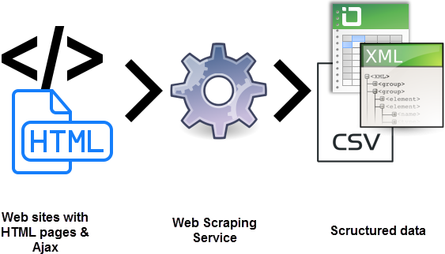

Recognise Numbers

A web app which recognise the number drawn by user on screen.The aim was to make a convolution neural network to recognise handwritten digits by training the model on MNIST dataset available in keras.Learned to use cnn and improving accuracy of model over validation dataset.
Skills Used : Keras ,Tensorflow.js ,(html + css + javascript),github pages
Image Classification

Did binary and multiclass classification of images using dataset from different resources.It basically includes Happy or Sad emoji ,Cat or Dog,Fashion Mnist image classification.New thing which I learned was applaying Callbacks and using Tensorflow ImageDataGenerator Class.How agumentation of images helps in better validation results.
Skills Used : Tensorflow
Iris Visualisation

It's a learning based project done by me while learning data Visulisation.Learned a Lot from this one.The project includes complete Visulisation of iris dataset.They key thing to note after visulisation of dataset was that The dataset contain two clusters with complete sepration , Iris setosa ,Iris virginica and Iris versicolor always are together .So,based on visulisation it was clear which machine leaning algorithm can be used for predicting the type of irirs species based on data provided.
Skills Used: Python library Pandas , Matplotlib and Seaborn .
Dataframe Making
We always don't get the data we want. Sometimes we need to get the data on our own. We can either use API or extract data from webpages using a technique called web scraping to retrieve data.Did Web Scrapping of a racing site retrived data manipulated it and converted it into a dataframe so that it can used in future.
Skills Used : Python's BeautifulSoup and Pandas library.